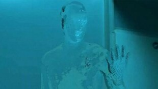
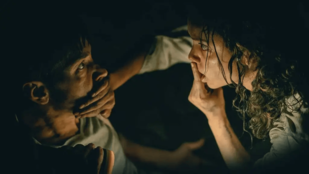

Horror continues to expand, exploring new themes, storytelling techniques, and psychological depth. Modern films challenge traditional tropes, blending horror with social issues, psychological tension, and unexpected narratives.
A modern reimagining of the classic tale, The Invisible Man shifts focus to psychological abuse, gaslighting, and paranoia. With intense suspense, Elisabeth Moss delivers a gripping performance as a woman haunted by an unseen force, blurring the line between reality and delusion in a chilling portrayal of domestic horror.
Jordan Peele’s Nope blends sci-fi horror with sharp social commentary, exploring themes of spectacle, exploitation, and humanity’s obsession with the unknown. With eerie visuals and slow building tension, the film redefines extraterrestrial horror while critiquing the entertainment industry’s thirst for shocking spectacle.
Barbarian is a subversive horror film that constantly shifts audience expectations, starting as a simple rental mix up before unraveling into psychological terror. Blending social commentary with shocking twists, it explores themes of trust, trauma, and the hidden dangers lurking beneath the surface of everyday situations.
Smile is a psychological horror film that delves into the lasting effects of trauma, following a therapist plagued by a sinister entity that spreads through its victims’ terrifying smiles. As paranoia and dread intensify, the film explores the inescapable nature of fear and psychological suffering.
| Nombre | ID | Carrera | Correo |
|---|---|---|---|
| Maria Jose Arévalo | 1094044725 | Jurisprudencia | mariaj.arevalo@urosario.edu.co |
| Daniela Cortes Rodriguez | 1095550727 | Jurisprudencia | daniela.cortesro@urosario.edu.co |